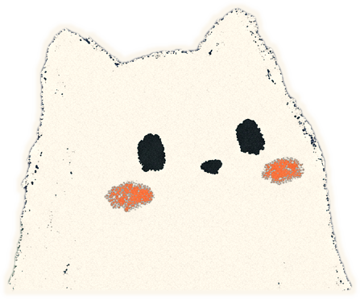

Today’s goalDescribe your normal day from start to finish without stopping.
Today’s phraseswrite your own version underneath
1I usually get up around…
2The first thing I do is…
4By the end of the day I’m…
Core · 30–40 minfinish these and the day is done
Read the four phrases out loud twice each, then write your own version on the line under each one.
Say your four sentences out loud without looking at the page.
Talk for 60 seconds about your whole day. Do not stop, do not restart.
Write the one word you were missing at the bottom of the page, then look it up.
Bonus · 10–20 min
Optional, always
Record the 60 seconds and listen back once. Write down one thing you would change.
ChatGPT Voice: “Ask me five simple questions about my daily routine. Wait for my full answer before the next question.”

My day, in my own words
Four sentences using today’s phrases · real details, real times
Today felt
One word I needed